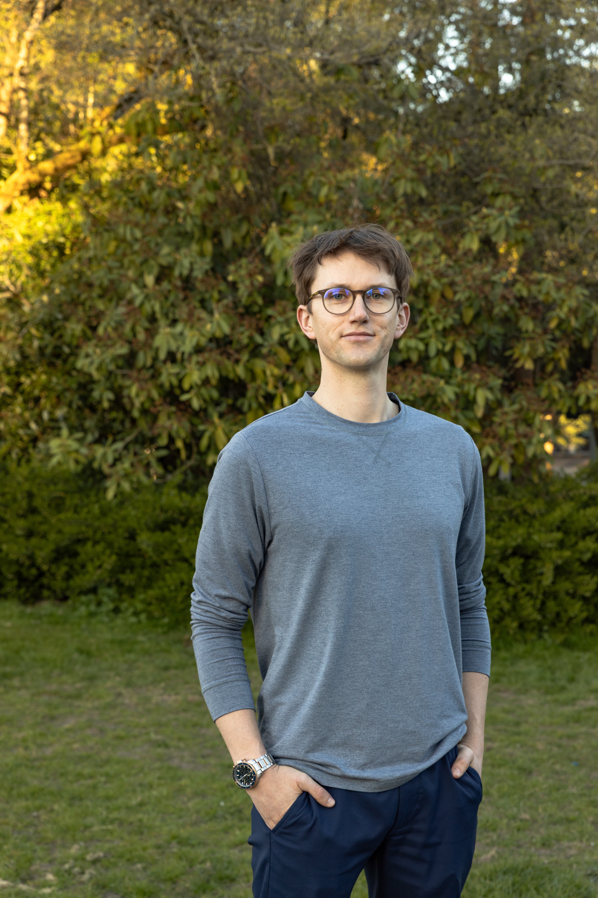

I apply systematic, analytical thinking to the things I love, and share what I learn, so others can do the same.
About
I began my career as an engineer, and since I have been a graduate student, an analyst on a commodities desk, and a junior trader on that commodities desk. I have learned a lot, including that academia and corporate jobs are not my calling. Currently applying my generalist knowledge and ambition to entrepreneurship.
My interests are underpinned by the concepts of strategy, philosophy, and self-mastery. My hobbies include but are not limited to fly fishing, backpacking, backcountry skiing, endurance running, world travel, poker, reading, music, and comedy. Currently working on Temerity Holdings.
Projects